About
About Projects
Projects Books
Books Games
Games Stories
Stories Store
Store Notes
Notes How-to
How-toOquonie (2014) is a textless puzzle game created in collaboration with devine where you must find your way across an intertwined megastructure. You will not be alone, your incarnations will have the help of bizaroid characters speaking an obscure language.
Published by hundredrabbits.
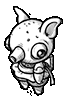We made Oquonie while living in japan. The game was our first collaborative project as hundredrabbits, and a reflection of our experience navigating a new country, with language as a recurent obstacle. Oquonie is about being lost in a foreign space.
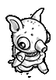A big inspiration for this project was the short story "A town without streets" by Junji Ito, about a city of endless interconnecting houses and rooms, where privacy is non-existent. To preserve the little privacy they do have, the townspeople wear masks.
Back in 2013, we both had full-time jobs in different studios in Tokyo, we worked on Oquonie after work, and on weekends, for a total of 6 months. You can learn more about the development of the project here.
In January 2023, nearly 10 years after we started this project, we are re-releasing it for uxn (see photo below). I am re-doing all of the assets in pixel art. The game will be playable on some older(Nintendo DS), and newer devices(Playdate). The characters translate really well to pixel art.
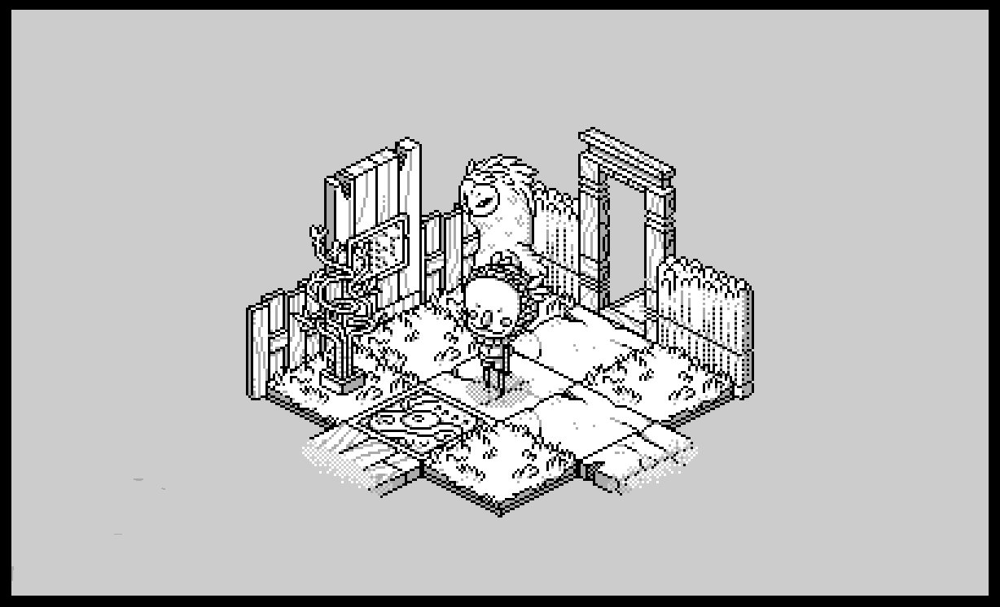Oquonie features an original soundtrack, and was best described as Animal Crossing in a K-Hole.
Artwork
 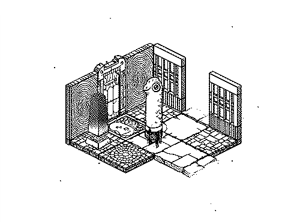
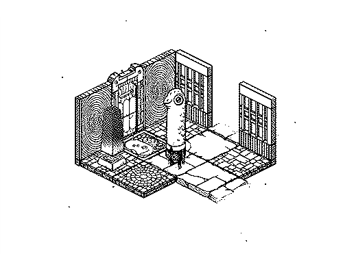


comingofworlds.jpg "Oquonie promo art, Hundredrabbits project")
Spoilers
For those who haven't played, and don't want the game spoiled do not scoll past this point.
*****
The characters in Oquonie have their own language/alphabet called Camilare. This list contains some of the most commonly used characters in Oquonie, mouse-hover the character to see their meaning.
Meaning is created by saying two subjects and their relationship, for example, the following text means that the key for either subject is help and pillar. This dialog comes up when trying to request help without having first found the subject pillar:
 |
 |
 |
This list contains some of the most commonly used characters in Oquonie.
 |
 |
|
| Nestorine | Nephtaline | Nemedique |
 |
") |
 |
| Neomine | Dialocie(Door) | Necomedre |
") |
 | |
| Zolenie(Teleport) | Hoathiste(Correct) | Gemaniste(Incorrect) |
|  | |
|
| Ecrine(Unlocked) | Ednasene(Locked) | Celpadmale(Help) |
|  | ") |
 |
| Aohzaille(Sound) | Mikethale(Guide) | Casarmate(Inside) |
") |
|
 |
| Carmate(Outside) | Emetegisenete(Key) | Zorgiene(Friend) |
") |
|
|
| Oquonie(Foe) | Den(Pillar) |